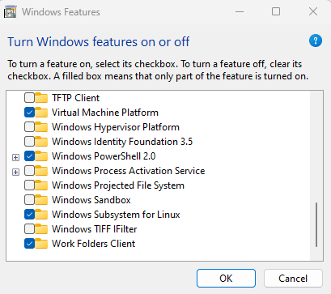

Containerising the Archive Appliance
The EPICS Archiver Appliance is principally targeted to run on a Linux host and there are some issues when attempting to run it under Windows. Ticket #8438 was to investigate and document whether the Archiver Appliance can be run in a container on a Windows host. Particular interest is its ability to run on a NDX Windows virtual machine.
A new EPICS gateway has been configured to make localhost PVs available to the container - In C:\Instrument\Apps\EPICS\gateway (https://github.com/ISISComputingGroup/EPICS.git), new files have been added:
File |
Description |
|---|---|
|
Container gateway security |
|
Container gateway PV list |
|
Container gateway start script, called from start_gateways.bat |
|
Container gateway stop script, called from stop_gateways.bat |
A new git repository has been created (https://github.com/ISISComputingGroup/isis-aa-config.git). This contains all the code required to build a Archiver Appliance image and run a container instance.
File |
Description |
|---|---|
|
Defines the content to build into the image |
|
Used by |
|
This was used as an experimental compose file to test various networking options to try to circumvent Windows lack of ‘host’ container networking. Retained as there is some useful info and techniques |
|
This directory is mounted by the container and facilitates data persistence |
Due to complications and uncertainties of licencing of Docker Desktop, it has been decided to adopt an open source alternative, a number of which are freely available, such as Rancher Desktop, Podman, etc. For the purpose of this exercise, Rancher was chosen.
Rancher Desktop Installation
Non-windows Containers on Windows hosts need Windows System for Linux (WSL2) to be installed on the host machine. If not already present, this is installed as part of the Rancher Desktop installation process. Rancher Desktop will create its own necessary distributions (rancher-desktop-data and rancher-desktop) on WSL and it there is no need to manually install anything else.
Note: Rancher (and other container managers) have a minimum Windows version that it will run on, which is 10-1909 or newer.
Download the Installation MSI file for Windows (x64). At the time of writing, it is: Rancher.Desktop.Setup.1.15.1.msi
Run the msi file, you will need admin access at some point. Under testing, an error message was presented: “Rancher Desktop Setup Wizard ended prematurely. Your system has not been modified…”, but on the second attempt, the installation completed successfully.
Creating the Archiver Appliance image
The image is composed of the EPICS Archiver Appliance, hosted on a minimal Linux platform. The definition for this is specified in the Containerfile file.
The repository for the containerised Archiver Appliance development is: isis-aa-config.git
The image can be built either using the Containerfile directly:
nerdctl build . --tag isis-aa
Or it can be built and run using compose:
nerdctl compose -f aa-compose.yaml up
The compose route is preferred, as it specifies all the port mappings and host mount points within the YAML file.
if nerdctl build is used, then the container will need to be spun up via the following:
nerdctl run -it --rm -v "containerdata:/storage" -p 17665:17665,5064:5064,5065:5065 isis-aa /bin/bash
Where:
17665 is the Archiver Appliance web interface port.
5065,5064 are the standard EPICS channel access ports (both UDP and TCP).
Note that the local containerdata directory is specified as a relative path to the current working directory. It is possible to define an absolute path, but this needs further reading and testing to discover how it works.
Observations and present limitations
Minimum Windows version
Rancher Desktop (and likely any other container management platform under Windows) requires WSL2. The minimum Windows version that is supported is 10-1909. Unfortunately, the NDX VMs are older, probably running 10-1809, so it will not be possible to run any form of containerisation on those hosts until they are upgraded. Upgrading the NDX hosts requires a carefully designed test plan to ensure minimal risk to loss of beam time.
Rancher WSL vs Windows WSL
Although Rancher does install a version of WSL automatically, I ran into an issue which prompted me to update it using the cmd command: wsl --update
after which there were no further issues.
Virtualisation support on the NDX and NDH hosts
On the container host system (NDX) it is necessary to switch on WSL (Windows Subsystem for Linux): 
On the main VM host machine (NDH) it is necessary to switch on ‘Nested Virtualisation’ to allow the NDX VM to run its own VMs. If this is not done, then errors will be presented when trying to run Rancher Desktop: ‘Requires WSL with kernel 5.15 or newer (have 0.0.0.0)
EPICS Container Gateway
The problem
The Archiver Appliance running inside a container requires visibility of Channel Access broadcasts to enable it to see PVs. By default a container is isolated from the host network, unless networking is specified or specific ports mapped at runtime to the host network. A Linux host, with a standard network stack can permit a container to full network access by specifying --network 'host' parameter. Unfortunately, Windows does not implement a standard stack and has some weird network interface construction that prevents the ‘host’ option being used.
Instead a gateway has been configured which the container ‘sees’ via port mapping 5064 and 5065.
The new container targeted gateway is started with the start_gwcontainer.bat script, called from within start_gateways.bat.
Access security
A new ACF file (gwcontainer.acf) has been created specifically for the container gateway running on the localhost (NDX). Only localhost is in the machine list (HAG) and PVs are made read/write by anyone.
Performance
Reduced performance is to be expected when running containers on a virtual machine. Some metrics have been obtained by running simple containerised stress tests and comparing with those observed on a development machine. A simple python script to find 1000 prime numbers:
Host type |
Elapsed time |
|---|---|
NDX native |
0.004 - 0.010 s |
NDX container |
0.006 - 0.009 s |
At first sight, this seems to indicate that there should be very little concern regarding container performance on NDX machines compared with native execution.
Storing images in a different location
On installing Rancher Desktop, two WSL distributions are created: rancher-desktop and rancher-desktop-data. The latter is where images are stored and it is feasible to modify the physical storage volume via the following procedure:
wsl --shutdown
wsl --export rancher-desktop-data rancher-desktop-data.tar
wsl --unregister rancher-desktop-data
wsl --import rancher-desktop-data c:\instrument\var\containers rancher-desktop-data.tar --version 2
Once verified that it has worked, rancher-desktop-data.tar can be deleted.
Testing
In order to verify correct operation of the Archiver Appliance container, follow the procedures from the sections above:
Rancher Desktop Installation (above)
It is important to ensure that Rancher Desktop is running.
Start a local EPICS gateway, using Instrument/Apps/EPICS/gateway/start_gateways.bat
Build and run the container by following: Creating the Archiver Appliance image (above)
Wait for Tomcat to complete initialisation in the container.
Use a browser to view: http://localhost:17665/mgmt/ui/index.html
Select a small number of PVs and type them into the web page (Home page) where it says: “please type in some PV names here”
Click the ‘Archive’ button.
After a delay of around a minute or longer, the PV status should change from ‘Initial sampling’ to ‘Being archived’.
Check that archive files are being created in
./Containerdata/{sts,mts,lts}directory trees.